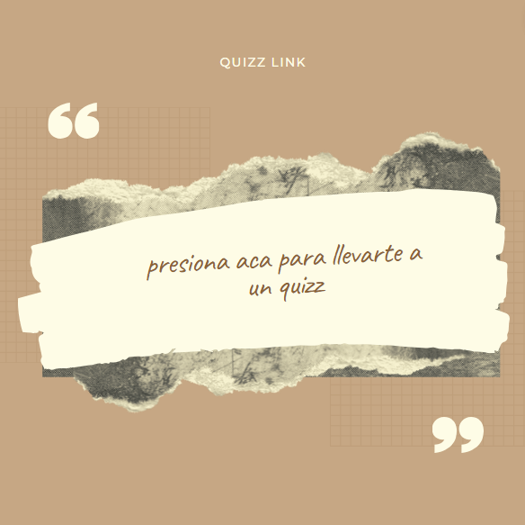

Capítulo 5
Y como lo sintió Henri, toda la zona se alarmo con lo que sucedido en la granja y se convirtió en un gran clamor, ya que pues, aunque Henri tratara de ocultar todo, tarde o temprano la zona y los granjeros tenían que enterarse, y el miedo de Henri era que creyeran que él había matado a la res y pues el ya se imaginaba eso, que lo iban a interrogar hasta saber la verdad, y lo que podía perjudicarlo era que él ya se había desecho del cuerpo del animal. Pero desde entonces todos los granjeros se alarmaron, y desde ese momento, ningún granjero pasaba por las noches cerca de la granja, a menos a que fuera acompañado y siempre estaban armados, pues estas medidas de seguridad llegaron a las casas de las madres ya que ellas les prohibieron a sus hijos salir hasta cierta hora y evitaban que los niños estuvieran en lugares muy oscuros y peligrosos. Rouquin el granjero logro convencer a los demás granjeros de reunirse para poder encontrar la verdad e igual él sabía que con ayuda o sin ayuda iba a encontrar la verdad. Henri le comento a Max que el señor Jean Michel que venía desde parís le envió una fuerte cantidad de dinero para recompensarle la muerte de su res, pero ellos estaban intrigados ya que la causa de la muerte de la vaca no había sido por que otro animal ataco a la vaca, sino porque no sabían exactamente que es lo que había sucedido con la res, por su estado que era muy extraño, y por lo mismo querían organizarse con todos los granjeros, para saber que fue exactamente lo que paso, pero el que más intriga tenía era Rouquin, ya que el si o si estaba decidido a encontrar la verdad sobre la muerte de la vaca. Sin mas excusas Max decidió apoyar el plan de Rouquin y se marcharon a descubrir todo, con ayuda de Jerome (hijo de la señora Bonnard) jóvenes, vecinos y por supuesto los granjeros, todos iban armados con objetos como picas, hachas, cuchillas y todo lo que les pudiera ayudar para defenderse, Max decidió dividir a todos en parejas y esas parejas en una sección. Max se detuvo con Jerome ya que era el mas joven de todos, y le pregunto si su madre ya sabia que se marchaban en busca del caso, a lo que el no sabia que responderle ya que su madre no estaba enterada de nada, pues aún así Max decidió que el iba a ser su acompañante, pero después, se arrepintió ya que podía ser que le pasara algo a el joven. En el camino se encontraron por la mansión Grisard, Jerome intento tocar la puerta y, salió Isabelle muy nerviosa y les pregunto que cual era el motivo de su visita. El le comento que estaban en busca de un supuesto monstruo y le conto lo que había ocurrido en la granja de Henri Morillon, pero Isabelle no estaba enterado de lo sucedido y entro en pánico, a lo cual Jerome le pidió disculpas y le comento que por seguridad se organizaron para acabar con el monstruo. Max y Jerome se despidieron de ella y siguieron su camino, pero antes de irse Max observo la mansión muy oscura y con una sola vela.
